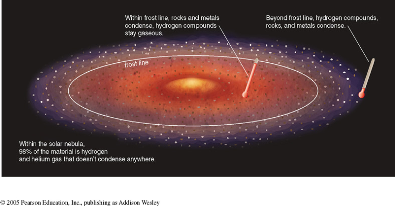
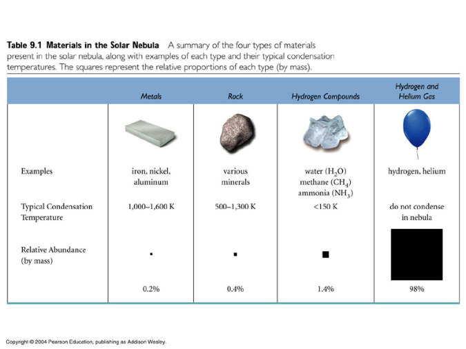
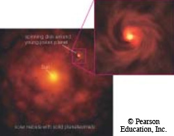

Please wait a few seconds for Flash files to load.
Summary: The terrestrial planets formed close to the Sun where temperatures were well suited for rock and metal to condense. The jovian planets formed outside what is called the frost line1, where temperatures were low enough for ice condensation.
In the previous section, we discussed the formation of a star via the collapse of a big cloud of gas. It is worth noticing that the eight planets in our solar system make up two different groups; the four planets closest to the Sun make up the rocky terrestrial planets and the four planets farthest from the Sun make up the gaseous jovian planets. Why do objects that formed from the same cloud of gas have different compositions? The answer lies in where these objects formed in relation to the parent star, our Sun.
After the solar nebula2 collapsed to form our Sun, a disk of material formed around the new star. The temperature across this protoplanetary disk3 was not uniform. Since different materials condense at different temperatures, our solar system formed different types of planets. The dividing line for the different planets in our solar system is called the frost line. In the simulation below, notice where hydrogen and helium condense in the solar nebula.
To view larger: right-click on animation and select "Enter fullscreen".
Hydrogen compounds, such as water and methane, typically condense at low temperatures, and remain gaseous inside the frost line where temperatures are higher. The heavier rocky and metallic materials are better suited to condense at higher temperatures. Thus, the inner planets are made almost entirely of rock and metal and form the group known as the terrestrial planets.
Diagram of the frost line
After the heavier elements and minerals condensed into solid bits of rock, they all orbited the Sun at about the same speed. As you can imagine, collisions of objects moving at the same speed are less destructive than those of objects moving at different speeds. Thus, when rocks orbiting the Sun move close to one another, they stick together more often than they destroy each other. These pieces gradually grow larger in a process called accretion. Once they are large enough, gravity forces them into spherical shapes.
To view larger: right-click on animation and select "Enter fullscreen".
Outside the frost line, temperatures are cooler and hydrogen compounds are able to condense into ices. Rock and metal are still present in the outer solar system, but both are outnumbered and outweighed by the hydrogen compounds. Thus, the planetesimals4 that formed in the outer solar system are composed primarily of hydrogen compounds with traces of rock and metal. Hydrogen and helium do not condense in the solar nebula, and are rather abundant in the large orbits of objects in the outer solar system. As the outer planetesimals continued to grow larger, the strength of their gravity grew stronger. Surrounding material, primarily hydrogen and helium, is increasingly attracted to the planetesimals as they grow in size and the planetesimals accrete more and more.
Materials in the solar nebula
The jovian planetesimals soon became the icy, dense cores we see today surrounded by huge clouds of accreted gas. Much like the collapse of the solar nebula, these balls of gas can grow large enough to induce gravitational collapse. Remember from the star formation section that gravitational collapse involves heating up, flattening out and rotating faster. It is possible that as the jovian protoplanets collapsed, smaller particles in the surrounding disk formed into some of the moons that now orbit the individual outer planets. This makes sense, since the outer planets all have many moons and rings that orbit in the same plane, just like the planets in our solar system orbit the Sun in the same plane.
Solar nebula
1 Frost Line: The boundary in the solar nebula beyond which ices could condense; only metals and rocks could condense within the frost line.
2 Solar Neubla: The piece of interstellar cloud from which our own solar system formed.
3 Protoplanetary Disk: A disk of material surrounding a young star (or protostar) that eventually forms planets.
4 Planetismals: The building blocks of planets, formed by accretion in the solar nebula.
Adapted from source material by the Laboratory for Atmospheric and Space Physics at the University of Colorado at Boulder